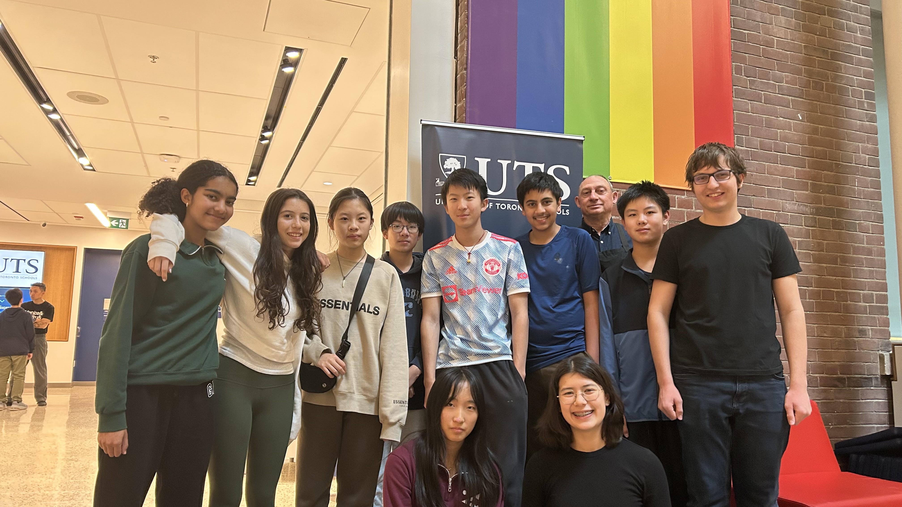
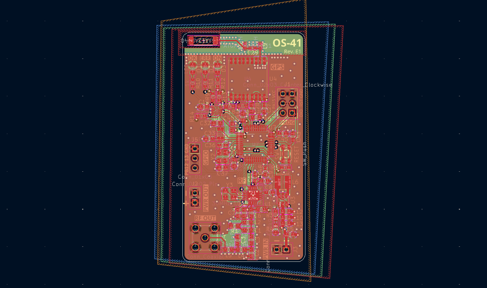

// UTSHAS
A club at UTS (University of Toronto Schools). We launch weather balloons with various scientific missions!
>> fig. 01: A promo video for our recent paper airplane world-record attempt
> cat ./utshas/docs/our_objectives.md
Our objectives as a club:
- Teach the DIY ethic Show folks what people can do when they can do things themselves!
- Do cool science at home: Bring near-space to be more accessible to the general population like us.
- Push the boundaries: Pursue ambitious projects that challenge what people think is possible for a student-led club.

>> fig. 02: The people of UTSHAS.

>> fig. 03: Our OS-41 flight computer, custom built and assembled.
> cat ./utshas/docs/our_projects.md
Projects in the past:
> Check us out! We meet in the I-Lab at lunch on Tuesdays and Thursdays_